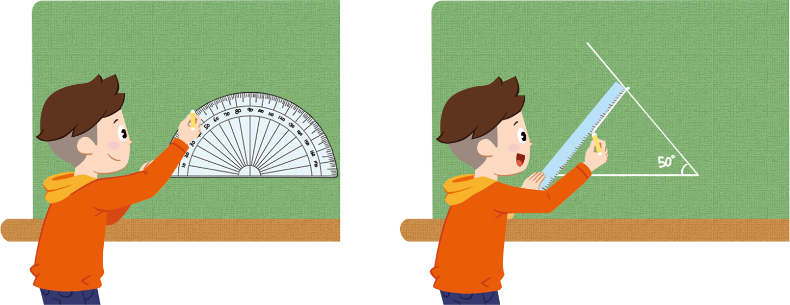

- 물음 1
- 물음 2
- 물음 3
-
-
주어진 선분의 양 끝에 크기가
같은 각을 그립니다.두 각의 변이 만나는 점을 찾아
삼각형을 그립니다.크기가 50°인
각을 그려 볼까? -
-
-
변의 길이를 재어 어떤 삼각형인지 말해 보세요.
변의 길이를 재어 보니 두 변의 길이가 같습니다. 두 변의 길이가 같으니 이등변삼각형입니다. -
알게 된 점을 이야기해 보세요.
예선분의 양 끝에 크기가 같은 두 각을 그리고 두 각의 변이 만나는 점을 찾으면 이등변삼각형이 됩니다.